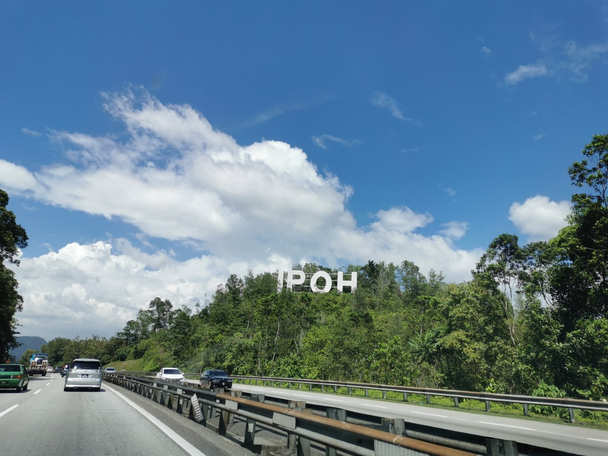

HOME |
ABOUT ME |
MY EXPERIENCE |
MY EDUCATIONAL BACKGROUND |
MY FAMILY |
MY GALLERY |
CONTACT ME |
MY EXPERIENCE
My family and I had planned a vacation for the end of the semester. My father recommended that we visit Taiping, Perak. His suggestion was well-received by everybody. My father was looking through a vacation brochure when he came across some intriguing spots in Taiping to visit. We went to bed early since we wanted to be well rested for our trip the next day. We awoke the next day and began packing our belongings. Breakfast was provided by my mother for us. Nasi Lemak was prepared by my mother. My father piled everything into the car booth when he finished eating. We left early in order to avoid being delayed in traffic. We got up at 8:00 a.m. and relocated. At 10.45 a.m., we arrived at Taiping. We headed to a large shopping mall after we arrived in Taiping. We ate Texas Chicken at 1 o'clock in the afternoon. My father purchased tickets for us to visit the Perak Museum . We were driving home in the evening. We went to the Taiping Lake Garden before returning home. Because a picture is worth a thousand words and memories are priceless, I snapped a lot of pictures. Around 6 o'clock in the evening, we left Taiping. We arrived at our house about 8 p.m. For supper, my father purchased 'Roti Canai '.

NEXT PAGE